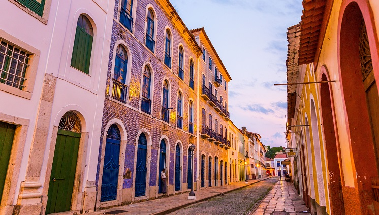

Maranhão
Maranhão, estado no nordeste brasileiro, é formado em parte pela Floresta Amazônica e pelas praias ao longo do Oceano Atlântico. Próximo à cidade de Barreirinhas, grandes dunas de areia branca criam paisagens que lembram um deserto no Parque Nacional Lençóis Maranhenses, onde lagoas de água fresca nas quais se pode nadar se formam durante a temporada de chuvas. É na capital, São Luís, que se encontra o agitado bairro histórico conhecido como Reviver.
Quais lugares eu posso ir?
Lençóis Maranhenses

O Parque Nacional dos Lençóis Maranhenses é uma unidade de conservação brasileira de proteção integral à natureza localizada na região nordeste do estado do Maranhão. O território do parque, com uma área de 156 584 ha, está distribuído pelos municípios de Barreirinhas, Primeira Cruz e Santo Amaro do Maranhão.
Cidade histórica de São Luís
O centro histórico de São Luís, localizado na ilha de São Luís do Maranhão, na baía de São Marcos, é um exemplo excepcional de cidade colonial portuguesa adaptada às condições climáticas da América do Sul equatorial, e que tem conservado o tecido urbano harmoniosamente integrado ao ambiente que o cerca.
Patrimônio Mundial da UNESCO- casarões coloridos
Tombado pelo Iphan, em 1974, o Centro Histórico de São Luís - localizado na ilha de São Luís do Maranhão, na Baía de São Marcos - é um exemplo excepcional de adaptação às condições climáticas da América do Sul equatorial, e tem conservado o tecido urbano harmoniosamente integrado ao ambiente que o cerca.
Onde ficar no maranhão
hotel blue tree (★★★★)

Av. Avicenia, 1 - Calhau, São Luís - MA, 65071-370
Com excelente localização em São Luís, Blue Tree Towers São Luís Hotel está a 10 minutos de carro de Praia do Calhau e de Museu de Arte Sacra. Este hotel na praia fica a 6,9 km de Praia da Ponta d'Areia e a 8,5 km de Teatro Arthur Azevedo.
clique aqui para mais informações!Hotel Luzeiros (★★★★★)

.jpg)
Rua João Pereira Damasceno, 02 - Ponta do Farol, São Luís - MA, 65077-630
O Hotel Luzeiros São Luis está localizado em São Luís, a apenas uma curta caminhada da Praia da Ponta do Farol. Este hotel dispõe de um restaurante, piscina ao ar livre, academia e um bar. O hotel oferece uma recepção 24 horas, serviço de quarto e Wi-Fi gratuito em todas as áreas. Para sua comodidade, um estacionamento privativo está disponível no local.
clique aqui para mais informações!Brisamar Hotel & SPA (★★★★)


Brisamar Hotel e SPA - Av. São Marcos, 12 - Ponta D'areia, São Luís - MA, 65077-310
O Brisamar Hotel oferece acomodações em frente à praia, em São Luís, no Maranhão. Você terá acesso a uma sauna e a uma piscina. O Brisamar Hotel está situado entre a Praia Ponta D'Areia e a Lagoa do Jansen. Já o Aeroporto Internacional Marechal Cunha Machado está localizado a 16 km da propriedade.
clique aqui para mais informações!Restaurante para ir
Coco bambu (★★★★)

Av. Coronel Colares Moreira, 1 - Quadra 19 - Calhau, São Luís - MA, 65071-322
O Coco Bambu, em São Luís, é um restaurante com ambientes aconchegantes e sofisticados, ideal para celebrar momentos especiais. O espaço conta com música ao vivo e uma equipe treinaada para um atendimento personalizado. O cardápio inclui pratos como carne de sol, frutos do mar e especialidades locais.
clique aqui para saber mais!Cabana do sol (★★★★)
Avenida Litorânea, 10, São Luís, Brazil 65076-170.
O Cabana do Sol é um restaurante popular em São Luís, Maranhão, conhecido por sua culinária maranhense, ambiente acolhedor e, principalmente, pela vista deslumbrante da Avenida Litorânea.
clique aqui para saber mais!Ferreiro Grill (★★★★)
R. Independência, 10 - Quadra 05 - Ponta do Farol, São Luís - MA, 65077-180.
O Ferreiro Grill em São Luís é um restaurante conhecido por sua culinária diversificada, com foco em carnes, peixes e frutos do mar, além de outras opções como risotos e massas.
clique aqui para saber mais!